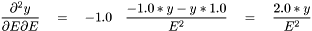
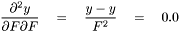
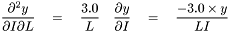

The classe beam to compute and store the output from 4 parameters stored in a XML file. More...
#include <beam.h>
Public Member Functions | |
Constructor and destructor | |
| beam (string sFile="alpha.xml", bool bVerbose=false) | |
| Constructor of the beam object with the XML File which contains the values of the 4 parameters. | |
| ~beam () | |
| Destructor of the beam object Delete the vector of derivates if not NULL. | |
Input/Output in XML format | |
| void | readXMLInputs () |
| Read and set the values of the 4 parameters in the XML file. | |
| void | writeXMLOutputs (string sXMLFile) |
| Save the results in an XML output file. | |
Computation | |
| void | computeDeviation () |
| Compute the deviation of the beam. | |
| void | computeDerivates () |
| Compute the derivates of the deviation from all the 4 inputs parameters. | |
| void | computeHessian () |
| Compute the hessian;. | |
Treat the Log | |
| void | printLog () |
| Print the log with the current values of the attributes /*! | |
| void | setUnsilent () |
| Set the boolean log attribute to true. | |
| void | setSilent () |
| Set the boolean log attribute to false. | |
Private Member Functions | |
| double | getValueFromXPath (string sXPath, xmlXPathContextPtr xpathCtx) |
| getValueFromXPath | |
Private Attributes | |
Attributes to the constructor | |
The alone parameter for the constructor is the XML file which contains the value of the 4 parameters. The boolean flag _bVerbose to print the log For example, <?xml version="1.0"?> <beam> <description name="beam" title="UseCase beam with XML input file" version="1.0" date="2014-04-07"> <tool name="beam exe" version="1.0"/> </description> <inputs F= "321.0" E="3.0e9" L="2.5" I="4.0e-6"> <derivate activate="on"/> <hessian activate="off"/> </inputs> </beam> | |
| string | _sFile |
| The XML file to read the values of the 4 input parameters. | |
| bool | _bVerbose |
| A boolean if printing the log. | |
The inputs parameters | |
| double | _dE |
| The value of the E parameter (-1 default value). | |
| double | _dF |
| The value of the F parameter (-1 default value). | |
| double | _dL |
| The value of the L parameter (-1 default value). | |
| double | _dI |
| The value of the I parameter (-1 default value). | |
The computed informations | |
| double | _dY |
| The value of deviation computed from the 4 parameters (-1 default value). | |
| double * | _vecDerivate |
The vector of derivates of the deviation  for each input parameters. for each input parameters. | |
| double ** | _matHessian |
| The matrix of hessian. | |
The classe beam to compute and store the output from 4 parameters stored in a XML file.
This class implements the beam usecase.
The formula of the deviation of a beam is given by:
![\[ y = \frac{FL^{3}}{3EI} \]](form_0.png)
where the variables are:


The values of the 4 parameters are readed from the XML file.
<?xml version="1.0"?> <beam> <description name="beam" title="UseCase beam with XML input file" version="1.0" date="2014-04-07"> <tool name="beam exe" version="1.0"/> </description> <inputs F= "321.0" E="3.0e9" L="2.5" I="4.0e-6"/> <computation> <derivate activate="on"/> <hessian activate="off"/> </computation> </beam>
The deriavtes are computed in the
| beam::beam | ( | string | sFile = "alpha.xml", |
|
| bool | bVerbose = false | |||
| ) |
Constructor of the beam object with the XML File which contains the values of the 4 parameters.
| sFile | (string) the XML file where the four parameters are stored | |
| bVerbose | (boolean) the flag to print the Log |
| void beam::computeDerivates | ( | ) |
Compute the derivates of the deviation from all the 4 inputs parameters.
The derivates of the deviation  from each variables are :
from each variables are :
![\[ \frac{\partial y}{\partial E} \quad = \quad \frac{FL^{3}}{3I} \times \frac{-1.0}{E^2} \quad = \quad \frac{-1.0 \times y}{E} \]](form_8.png)
![\[ \frac{\partial y}{\partial F} \quad = \quad \frac{L^{3}}{3EI} \quad = \quad \frac{y}{F} \]](form_9.png)
![\[ \frac{\partial y}{\partial L} \quad = \quad \frac{F}{3EI} \times 3.0 L^{2}\quad = \quad \frac{3.0 \times y}{L} \]](form_10.png)
![\[ \frac{\partial y}{\partial I} \quad = \quad \frac{FL^{3}}{3E} \times \frac{-1.0}{I^2} \quad = \quad \frac{-1.0 \times y}{I} \]](form_11.png)
| void beam::computeDeviation | ( | ) |
| void beam::computeHessian | ( | ) |
Compute the hessian;.
We use essentially
![\[ (\frac{u}{v})^{'} \quad = \quad \frac{u^{'} v - u v^{'}}{v^2}\]](form_12.png)
from  is :
is : 

![\[ \frac{\partial^2 y}{\partial F\partial E} \quad = \quad \frac{-1.0}{E} \quad \frac{\partial y}{\partial F} \quad = \quad \frac{ -1.0 * y}{E F} \]](form_16.png)
![\[ \frac{\partial^2 y}{\partial L\partial E} \quad = \quad \frac{-1.0}{E} \quad \frac{\partial y}{\partial L} \quad = \quad \frac{ -3.0 * y}{E L} \]](form_17.png)
![\[ \frac{\partial^2 y}{\partial I\partial E} \quad = \quad \frac{-1.0}{E} \quad \frac{\partial y}{\partial I} \quad = \quad \frac{y}{E I} \]](form_18.png)
from  is :
is : 

![\[ \frac{\partial^2 y}{\partial L\partial F} \quad = \quad \frac{1.0}{F} \quad \frac{\partial y}{\partial L} \quad = \quad \frac{ 3.0 * y}{F L} \]](form_22.png)
![\[ \frac{\partial^2 y}{\partial I\partial F} \quad = \quad \frac{1.0}{F} \quad \frac{\partial y}{\partial I} \quad = \quad \frac{ -1.0 * y}{F I} \]](form_23.png)
from  is :
is : 
![\[ \frac{\partial^2 y}{\partial L\partial L} \quad = \quad 3.0 \quad \frac{ 3.0 \times y - y }{L^2} \quad = \quad \frac{6.0 \times y}{L^2} \]](form_26.png)

from  is :
is : 
![\[ \frac{\partial^2 y}{\partial I\partial I} \quad = \quad -1.0 \quad \frac{ -1.0 * y - y * 1.0 }{I^2} \quad = \quad \frac{ 2.0 * y}{I^2} \]](form_30.png)
| double beam::getValueFromXPath | ( | string | sXPath, | |
| xmlXPathContextPtr | xpathCtx | |||
| ) | [private] |
getValueFromXPath
| sXPath | the XPath where stored the inputs parameter | |
| xpathCtx | the XML XPath context by the XML file |
| void beam::printLog | ( | ) |
Print the log with the current values of the attributes /*!
/*! *
| void beam::readXMLInputs | ( | ) |
Read and set the values of the 4 parameters in the XML file.
For example,
<?xml version="1.0"?> <beam> <description name="beam" title="UseCase beam with XML input file" version="1.0" date="2014-04-07"> <tool name="beam exe" version="1.0"/> </description> <inputs F= "321.0" E="3.0e9" L="2.5" I="4.0e-6"> <derivate activate="on"/> <hessian activate="off"/> </inputs> </beam>
The XPath to read the value for each parameter is then:
: "//inputs/@E" : "//inputs/@L" : "//inputs/@I" | void beam::writeXMLOutputs | ( | string | sXMLFile | ) |
Save the results in an XML output file.
| sXMLFile | (string) the name of the output XML file to store all the computations (deviation, derivates and hessian). |
 1.6.1
1.6.1


![\[ Y= \frac{F*L^{3}}{3EI}\]](form_6.png)